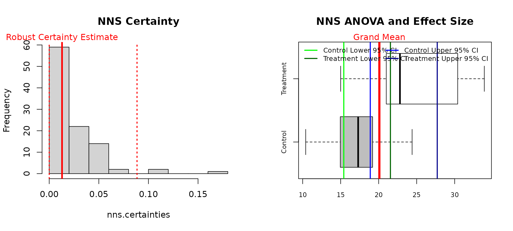
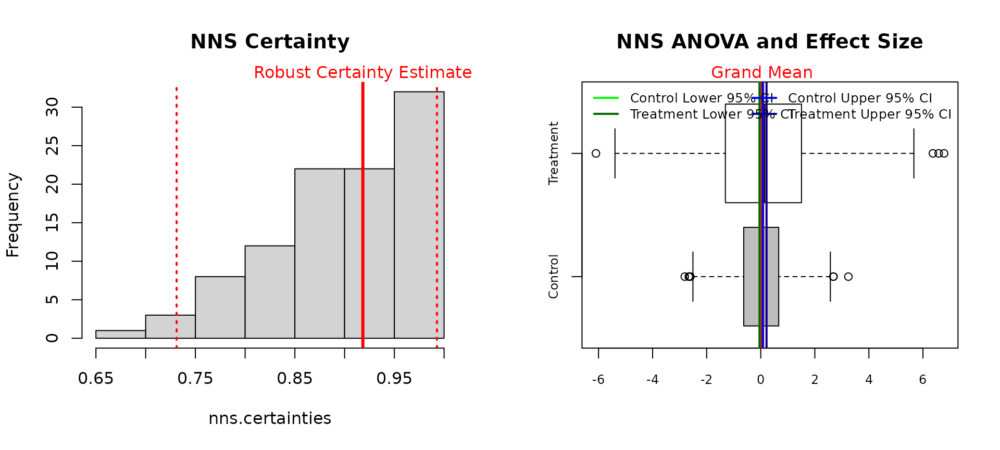
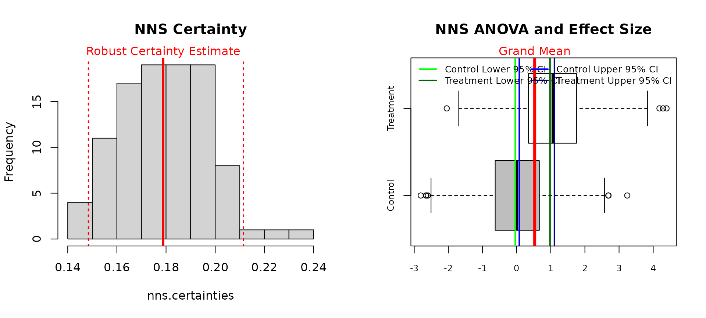
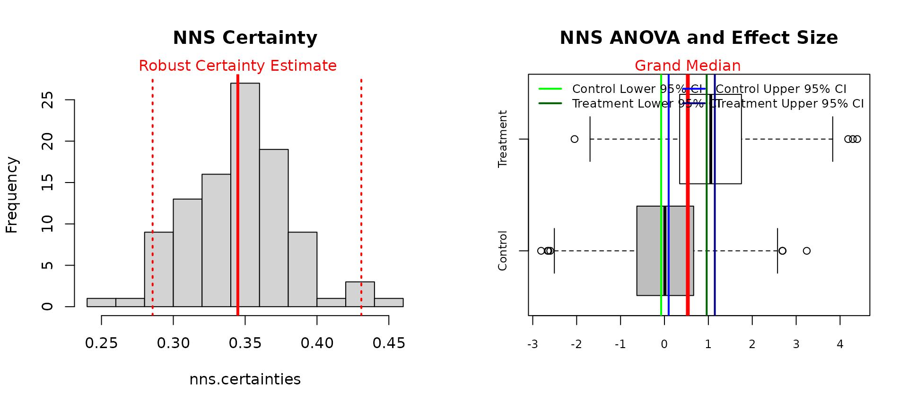
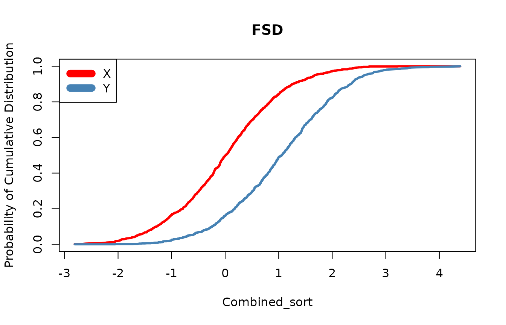

Getting Started with NNS: Comparing Distributions
Fred Viole
Source:vignettes/NNSvignette_06_Comparing_Distributions.Rmd
NNSvignette_06_Comparing_Distributions.RmdComparing Distributions
NNS offers a multitude of ways to test
if distributions came from the same population, or if they share the
same mean or median. The underlying function for these tests is
NNS.ANOVA().
The output from NNS.ANOVA() is a
Certainty statistic, which compares CDFs of distributions
from several shared quantiles and normalizes the similarity of these
points to be within the interval
,
with 1 representing identical distributions. For a complete analysis of
Certainty to common p-values and the role of power, please
see the References.
Test if Same Population
Below we run the analysis to whether automatic transmissions and
manual transmissions have significantly different mpg
distributions per the mtcars dataset.
The plot on the left shows the robust Certainty
estimate, reflecting the distribution of Certainty
estimates over 100 random permutations of both variables. The plot on
the right illustrates the control and treatment variables, along with
the grand mean among variables, and the confidence interval associated
with the control mean.
mpg_auto_trans = mtcars[mtcars$am==1, "mpg"]
mpg_man_trans = mtcars[mtcars$am==0, "mpg"]
NNS.ANOVA(control = mpg_man_trans, treatment = mpg_auto_trans, robust = TRUE)
## $Control
## [1] 17.14737
##
## $Treatment
## [1] 24.39231
##
## $Grand_Statistic
## [1] 20.09063
##
## $Control_CDF
## [1] 0.8708501
##
## $Treatment_CDF
## [1] 0.1294878
##
## $Certainty
## [1] 0.02345583
##
## $`Effect_Size_LB.2.5%`
## [1] 2.651417
##
## $`Effect_Size_UB.97.5%`
## [1] 12.29762
##
## $Confidence_Level
## [1] 0.95
##
## $`Robust Certainty Estimate`
## [1] 0.01293583
##
## $`Lower 95% CI`
## [1] 0
##
## $`Upper 95% CI`
## [1] 0.08849699The Certainty shows that these two distributions clearly
do not come from the same population. This is verified with the
Mann-Whitney-Wilcoxon test, which also does not assume a normality to
the underlying data as a nonparametric test of identical
distributions.
wilcox.test(mpg ~ am, data=mtcars) ##
## Wilcoxon rank sum exact test
##
## data: mpg by am
## W = 42, p-value = 0.001159
## alternative hypothesis: true location shift is not equal to 0Test if means are Equal
Here we provide the output from
NNS.ANOVA() and t.test()
functions on two Normal distribution samples, where we are pretty
certain these two means are equal.
set.seed(123)
x = rnorm(1000, mean = 0, sd = 1)
y = rnorm(1000, mean = 0, sd = 2)
NNS.ANOVA(control = x, treatment = y,
means.only = TRUE, robust = TRUE, plot = TRUE)
## $Control
## [1] 0.01612787
##
## $Treatment
## [1] 0.08493051
##
## $Grand_Statistic
## [1] 0.05052919
##
## $Control_CDF
## [1] 0.5218858
##
## $Treatment_CDF
## [1] 0.4893919
##
## $Certainty
## [1] 0.912545
##
## $`Effect_Size_LB.2.5%`
## [1] -0.1215839
##
## $`Effect_Size_UB.97.5%`
## [1] 0.2556542
##
## $Confidence_Level
## [1] 0.95
##
## $`Robust Certainty Estimate`
## [1] 0.9183685
##
## $`Lower 95% CI`
## [1] 0.7311398
##
## $`Upper 95% CI`
## [1] 0.9928339
t.test(x,y)##
## Welch Two Sample t-test
##
## data: x and y
## t = -0.96711, df = 1454.4, p-value = 0.3336
## alternative hypothesis: true difference in means is not equal to 0
## 95 percent confidence interval:
## -0.20835512 0.07074984
## sample estimates:
## mean of x mean of y
## 0.01612787 0.08493051Test if means are Unequal
By altering the mean of the y variable, we can start to
see the sensitivity of the results from the two methods, where both
firmly reject the null hypothesis of identical means.
set.seed(123)
x = rnorm(1000, mean = 0, sd = 1)
y = rnorm(1000, mean = 1, sd = 1)
NNS.ANOVA(control = x, treatment = y,
means.only = TRUE, robust = TRUE, plot = TRUE)
## $Control
## [1] 0.01612787
##
## $Treatment
## [1] 1.042465
##
## $Grand_Statistic
## [1] 0.5292966
##
## $Control_CDF
## [1] 0.7862176
##
## $Treatment_CDF
## [1] 0.2197938
##
## $Certainty
## [1] 0.1824463
##
## $`Effect_Size_LB.2.5%`
## [1] 0.900412
##
## $`Effect_Size_UB.97.5%`
## [1] 1.148409
##
## $Confidence_Level
## [1] 0.95
##
## $`Robust Certainty Estimate`
## [1] 0.1788691
##
## $`Lower 95% CI`
## [1] 0.1484567
##
## $`Upper 95% CI`
## [1] 0.2114944
t.test(x,y)##
## Welch Two Sample t-test
##
## data: x and y
## t = -22.933, df = 1997.4, p-value < 2.2e-16
## alternative hypothesis: true difference in means is not equal to 0
## 95 percent confidence interval:
## -1.1141064 -0.9385684
## sample estimates:
## mean of x mean of y
## 0.01612787 1.04246525The effect size from NNS.ANOVA() is
calculated from the confidence interval of the control mean and the
specified y shift of 1 is within the provided lower and
upper effect boundaries.
Medians
In order to test medians instead of means, simply set both
means.only = TRUE and medians = TRUE in
NNS.ANOVA().
NNS.ANOVA(control = x, treatment = y,
means.only = TRUE, medians = TRUE, robust = TRUE, plot = TRUE)
## $Control
## [1] 0.009209639
##
## $Treatment
## [1] 1.054852
##
## $Grand_Statistic
## [1] 0.532031
##
## $Control_CDF
## [1] 0.704
##
## $Treatment_CDF
## [1] 0.305
##
## $Certainty
## [1] 0.3497634
##
## $`Effect_Size_LB.2.5%`
## [1] 0.8659585
##
## $`Effect_Size_UB.97.5%`
## [1] 1.222394
##
## $Confidence_Level
## [1] 0.95
##
## $`Robust Certainty Estimate`
## [1] 0.3448958
##
## $`Lower 95% CI`
## [1] 0.2856004
##
## $`Upper 95% CI`
## [1] 0.4308527Stochastic Superiority
Stochastic superiority asks a different question than equality of means or equality of distributions. Rather than testing whether two samples came from the same population, or whether they share the same mean or median, stochastic superiority measures the probability that a random draw from one distribution exceeds a random draw from another.
For two random variables and , the stochastic superiority probability is:
and with ties accounted for, the tie-adjusted stochastic superiority measure is:
A value of indicates no directional advantage, values above favor , and values below favor .
This differs from stochastic dominance. Stochastic superiority is a pairwise exceedance probability, while stochastic dominance requires one distribution to be preferred to another over the entire shared support.
Below is an example using the same data generating process from the unequal means example.
## $p_gt
## [1] 0.233915
##
## $p_tie
## [1] 0
##
## $p_star
## [1] 0.233915Since was generated with a higher mean, the stochastic superiority probability for relative to should be less than , indicating that a draw from is less likely to exceed a draw from .
We can also obtain confidence intervals for the tie-adjusted superiority probability using maximum entropy bootstrap replicates.
NNS.SS(x, y, confidence.interval = TRUE, reps = 999, ci = 0.95)[1:5]
$p_gt
[1] 0.233915
$p_tie
[1] 0
$p_star
[1] 0.233915
$lower
[1] 0.2105631
$upper
[1] 0.2537789This provides an interpretable effect size for directional comparison between two distributions without requiring identical distributions or equal variances.
For discrete variables, ties may occur with positive probability, and
the reported p_tie and p_star values reflect
that adjustment explicitly.
set.seed(123)
x = sample(1:5, 100, replace = TRUE)
y = sample(1:5, 100, replace = TRUE)
NNS.SS(x, y)## $p_gt
## [1] 0.3982
##
## $p_tie
## [1] 0.1992
##
## $p_star
## [1] 0.4978Stochastic Dominance
Another method of comparing distributions involves a test for
stochastic dominance. The first, second, and third degree stochastic
dominance tests are available in NNS
via:

## [1] "Y FSD X"NNS.FSD() correctly identifies the
shift in the y variable we specified when testing for
unequal means.
Stochastic Dominant Efficient Sets
NNS also offers the ability to isolate
a set of variables that do not have any dominated constituents with the
NNS.SD.efficient.set() function.
x2, x4, x6, x8 all dominate their preceding
distributions yet do not dominate one another, and are thus included in
the first degree stochastic dominance efficient set.
set.seed(123)
x1 = rnorm(1000)
x2 = x1 + 1
x3 = rnorm(1000)
x4 = x3 + 1
x5 = rnorm(1000)
x6 = x5 + 1
x7 = rnorm(1000)
x8 = x7 + 1
NNS.SD.efficient.set(cbind(x1, x2, x3, x4, x5, x6, x7, x8), degree = 1, status = FALSE)## [1] "x4" "x2" "x8" "x6"Stochastic Dominant Clusters
Further, we can assign clusters to non dominated constituents and represent the clustering in a dendrogram.
NNS.SD.cluster(cbind(x1, x2, x3, x4, x5, x6, x7, x8), degree = 1, dendrogram = TRUE)## $Clusters
## $Clusters$Cluster_1
## [1] "x4" "x2" "x8" "x6"
##
## $Clusters$Cluster_2
## [1] "x3" "x1" "x7" "x5"
##
##
## $Dendrogram
##
## Call:
## hclust(d = dist_matrix, method = "complete")
##
## Cluster method : complete
## Number of objects: 8